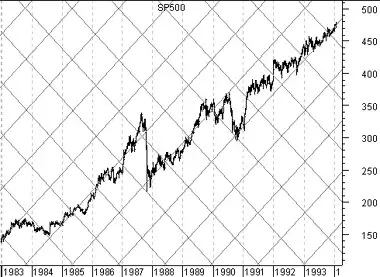

Gann Angles
Overview
W. D. Gann (1878-1955) designed several unique techniques for studying price charts. Central to Gann's techniques was geometric angles in conjunction with time and price. Gann believed that specific geometric patterns and angles had unique characteristics that could be used to predict price action.
All of Gann's techniques require that equal time and price intervals be used on the charts, so that a rise/run of 1 x 1 will always equal a 45 degree angle.
Interpretation
Gann believed that the ideal balance between time and price exists when prices rise or fall at a 45 degree angle relative to the time axis. This is also called a 1 x 1 angle (i.e., prices rise one price unit for each time unit).
Gann Angles are drawn between a significant bottom and top (or vice versa) at various angles. Deemed the most important by Gann, the 1 x 1 trendline signifies a bull market if prices are above the trendline or a bear market if below. Gann felt that a 1 x 1 trendline provides major support during an up-trend and when the trendline is broken, it signifies a major reversal in the trend. Gann identified nine significant angles, with the 1 x 1 being the most important:
| 1 x 8 | - | 82.5 degrees |
| 1 x 4 | - | 75 degrees |
| 1 x 3 | - | 71.25 degrees |
| 1 x 2 | - | 63.75 degrees |
| 1 x 1 | - | 45 degrees |
| 2 x 1 | - | 26.25 degrees |
| 3 x 1 | - | 18.75 degrees |
| 4 x 1 | - | 15 degrees |
| 8 x 1 | - | 7.5 degrees |
Note that in order for the rise/run values (e.g., 1 x 1, 1 x 8, etc) to match the actual angles (in degrees), the x- and y-axes must have equally spaced intervals. This means that one unit on the x-axis (i.e., hour, day, week, month, etc) must be the same distance as one unit on the y-axis. The easiest way to calibrate the chart is make sure that a 1 x 1 angle produces a 45 degree angle.
Gann observed that each of the angles can provide support and resistance depending on the trend. For example, during an up-trend the 1 x 1 angle tends to provide major support. A major reversal is signaled when prices fall below the 1 x 1 angled trendline. According to Gann, prices should then be expected to fall to the next trendline (i.e., the 2 x 1 angle). In other words, as one angle is penetrated, expect prices to move and consolidate at the next angle.
Gann developed several techniques for studying market action. These include Gann Angles, Gann Fans, Gann Grids and Cardinal Squares.
Examples
A Gann Fan displays lines at each of the angles that Gann identified. The following chart shows a Gann Fan on the S&P 500.
 You can see
that the S&P bounced off the 1 x 1 and 2 x 1 lines.
You can see
that the S&P bounced off the 1 x 1 and 2 x 1 lines.
This next chart shows the same S&P 500 data with
a Gann Grid.
